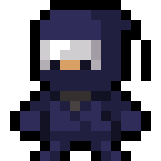
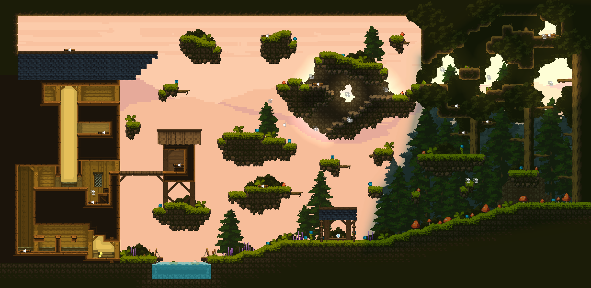
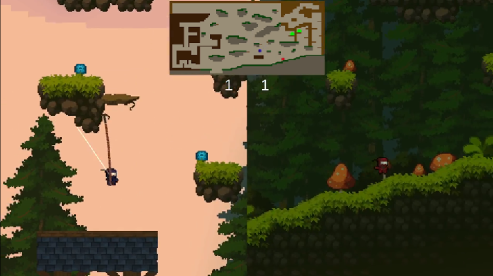
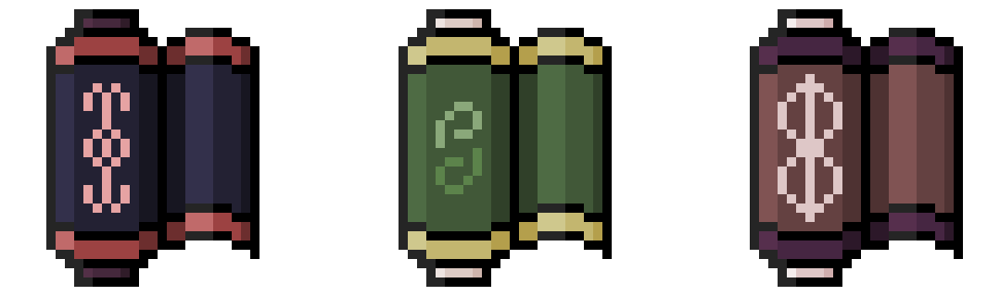

Ninja Run Duel
Ninja Run Duel est un platformer multijoueur local en 1 contre 1 dans lequel les joueurs doivent aller chercher des rouleaux avant leur adversaire. C'est un jeu dynamique avec beaucoup de mécanique de joueur pour lui permettre des mouvements fluides à l'horizontal ou à la vertical.
Contexte
Ce projet est né suite à un projet d'école, nous devions réaliser un jeu vidéo avec un aspect compétitif. Pour cela j'ai souhaité changé d'outil de travail et suis passé de Unreal à Unity pour agrandir mon arbre de compétence.
Mon but était de pouvoir produire un jeu plateformer en multijoueur local avec un style de jeu dynamique. Pour cela, j'ai programmé différente mécanique comme l'utilisation d'un grappin ou le saut mural tout cela dans un environnement travaillé.
Les joueurs s'affrontent un 1 contre 1 dans le but d'être le premier à atteindre 15 points. Le fait de jouez sur un même écran va leur permettre de voir les mouvements de leur adversaires et d'adaptées leur stratégie.
Pour obtenir des points ils vont devoir aller récupérer des rouleaux, il existe 3 types de rouleaux :
Les rouleaux uniques, ils apparaissent seuls sur la map, les 2 joueurs doivent aller récupérer le même rouleau. Le rouleau vaut 2 points.
Les rouleaux jumeaux, ceux-ci apparaissent en duo sur la carte, leur particularité est que lorsque un des rouleaux est récupés, le deuxième disparait. Cela force les joueurs à adapter leur stratégie en fonction de la positon des objectifs et de rapidement se décider sur celui le plus accessible. Le rouleau vaut 2 points.
Les rouleaux multiples, 5 rouleaux apparaissent sur la carte, les joueurs doivent aller tous les chercher. Ici ils doivent décider de qu'elles sont les objectifs qui sont les plus proches et qu'elles sont ceux qu'ils peuvent contester avec leur adversaire. Le rouleau vaut 1 point.
Travail sur les signes & feedbacks
L'objectif du projet était de réaliser un jeu en version gold, donc un jeu proche d'une version finale. Afin d'arriver à ça, j'ai beaucoup travaillé sur les signes et feedbacks.
Tout d'abord différentes animations pour mon personnage en fonction de l'état dans lequel il se trouve.
J'ai ensuite rajouter de nombreux effets pour les différentes actions du joueur pour continuer de rendre plus vivant mon univers (chacuns de ces exemples a été ralenti pour le bon visionnement des effets).


Conclusion
Le jeu a réussi a crer un réel aspect compétitif, plusieurs c'était entrainé avant un tournoi organisé pour tester dans de réel condition le projet, il a réussi a être apprécié par de nombreux élèves et beaucoup souhaite en voir plus. Le jeu peut encore être amélioré avec un meilleur travail de certaine mécanique et la création de nouvelle maps. Mais on peut aussi envisager de nouveau mode de jeu comme du contre-la-montre ou encore même un mode histoire, ce projet a encore beaucoup du potentiel et il ne restera pas trop longtemps dans le tiroir.
Contact
jeffrey.zu@ludus-academie.com
06 37 49 66 67